Cantina · Distilleria · Santa Massenza
Vino e grappa di famiglia, sul lago di Santa Massenza.
Azienda agricola fondata agli inizi del 1900, oggi alla quinta generazione: quattro ettari di vigneto, circa 25.000 bottiglie l'anno e un'antica distilleria artigianale in rame che lavora ancora.
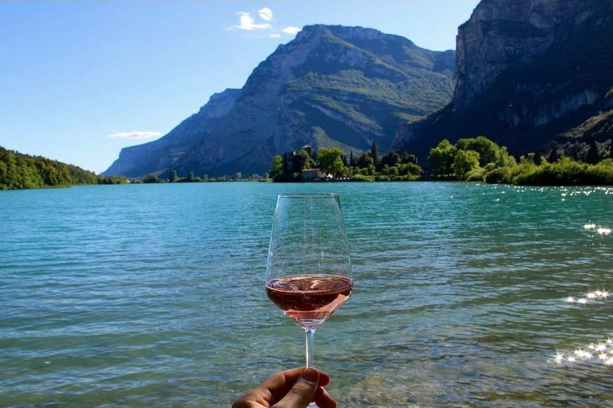
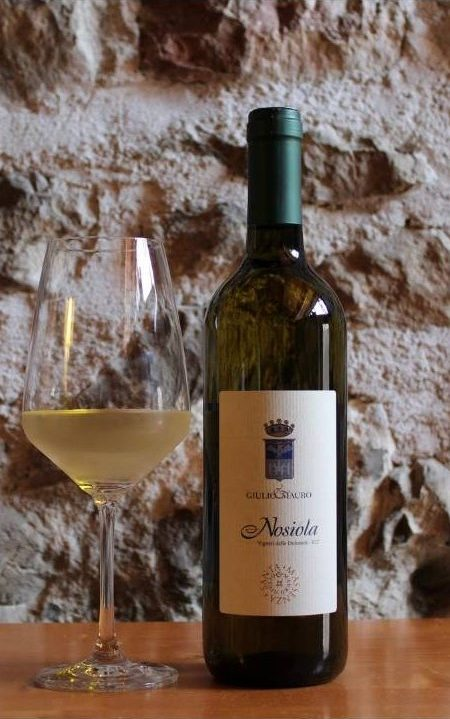
- 5agenerazione di famiglia in cantina e in distilleria
- 4ettari di vigneto tra il lago di Santa Massenza e il lago di Toblino
- 25.000bottiglie l'anno, circa: meno quantità, più qualità
- 29prodotti tra vini, grappe, liquori, olio e aceto
Vini, grappe, liquori, olio e aceto
La cantina, bottiglia per bottiglia.
Ventinove prodotti tra vini, grappe, liquori, olio e aceto. Qui sotto alcuni, fotografati contro il muro di pietra della cantina; l'elenco completo è più in basso.
Vino
Nosiola
Dal vitigno bianco autoctono del Trentino. Delicato e fresco.
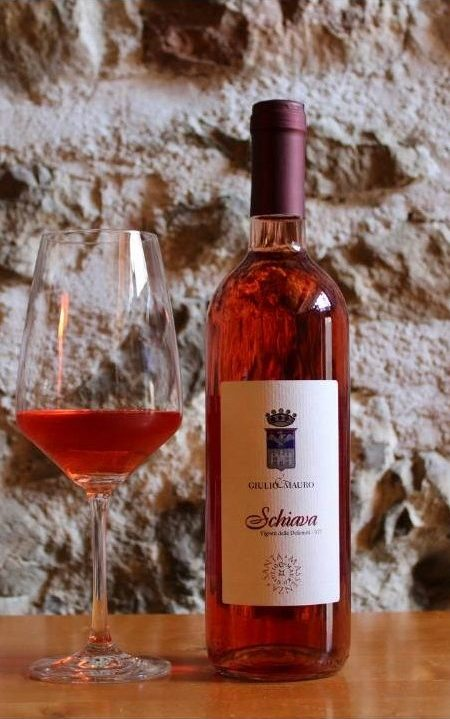
Vino
Schiava
Da uve Schiava, uno dei vitigni di casa.
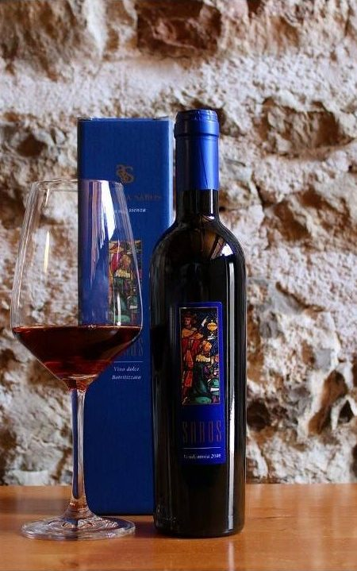
Vino dolce
Saros
Da uve Sauvignon attaccate dalla muffa nobile. Vino da meditazione.
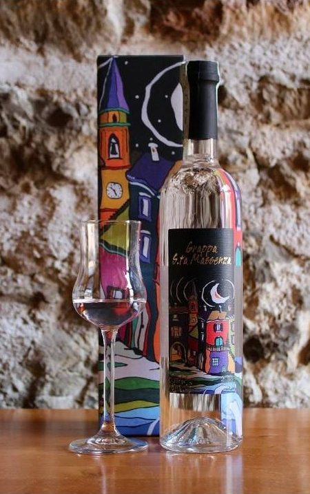
Grappa
Santa Massenza
Plurivitigno da vinacce di Schiava e Nosiola, a bagnomaria. 0,50 l, 41% vol.
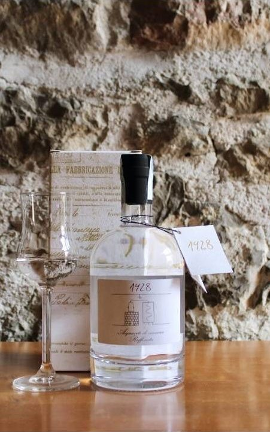
Grappa
1928
Doppia distillazione di Schiava e Nosiola. 804 bottiglie, 0,50 l.
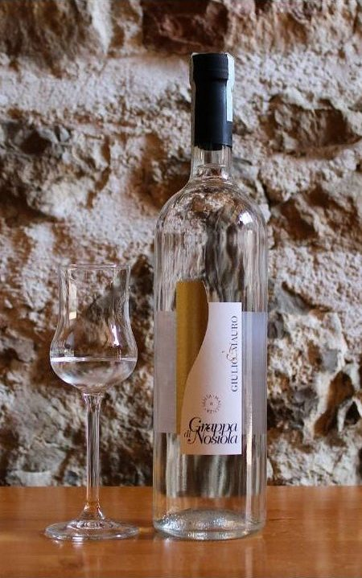
Grappa
Nosiola
Monovitigno, dalle vinacce del bianco di casa.
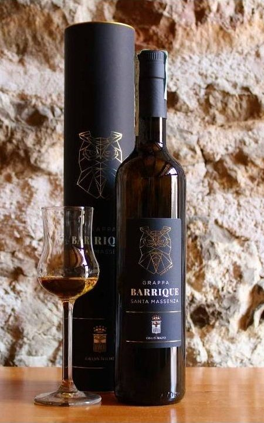
Grappa
Barrique
Invecchiata in botti di legno piccole.
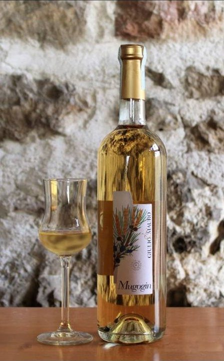
Liquore
Mugogin
Alle gemme di pino mugo e ginepro. Fresco, balsamico e resinoso.
Vini e spumanti 9
Grappe e distillati 14
Liquori, olio e aceto 6
Una piccola cantina di famiglia, tra due laghi.
Giulio & Mauro è un'azienda agricola, cantina e distilleria di Santa Massenza, nel comune di Vallelaghi. Si lavora in piccolo: tecniche enologiche aggiornate e un naturale rispetto della tradizione.
Le vigne, circa quattro ettari, guardano il lago di Santa Massenza e il lago di Toblino. Dalle uve nascono vini bianchi e rossi, spumanti, e le vinacce passano nell'alambicco di casa per diventare grappa.
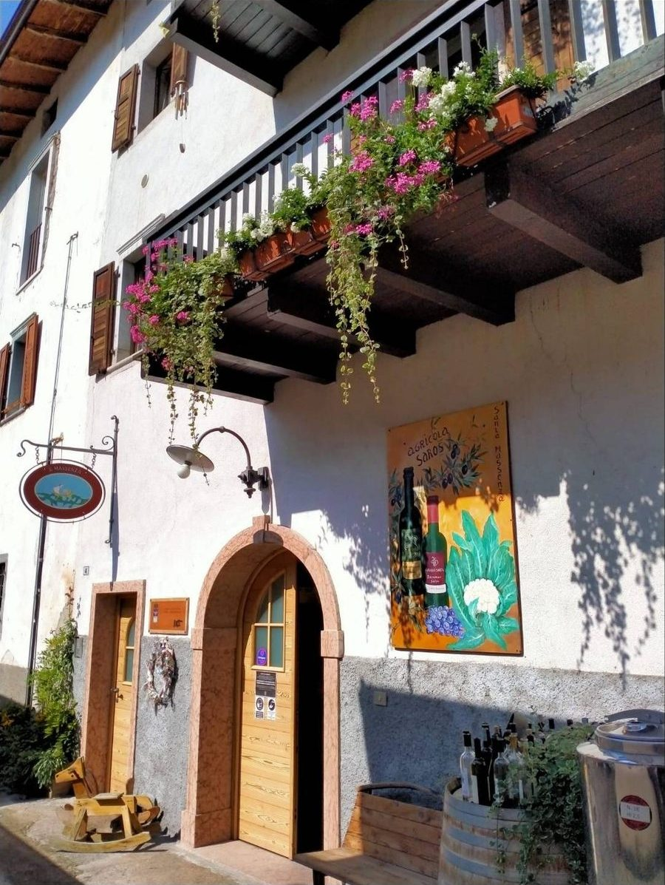
Le uve
- Schiava
- Nosiola
- Moscato
- Cabernet Sauvignon
- Negrara
La distilleria artigiana
Un alambicco in rame del primo Novecento, che lavora ancora.
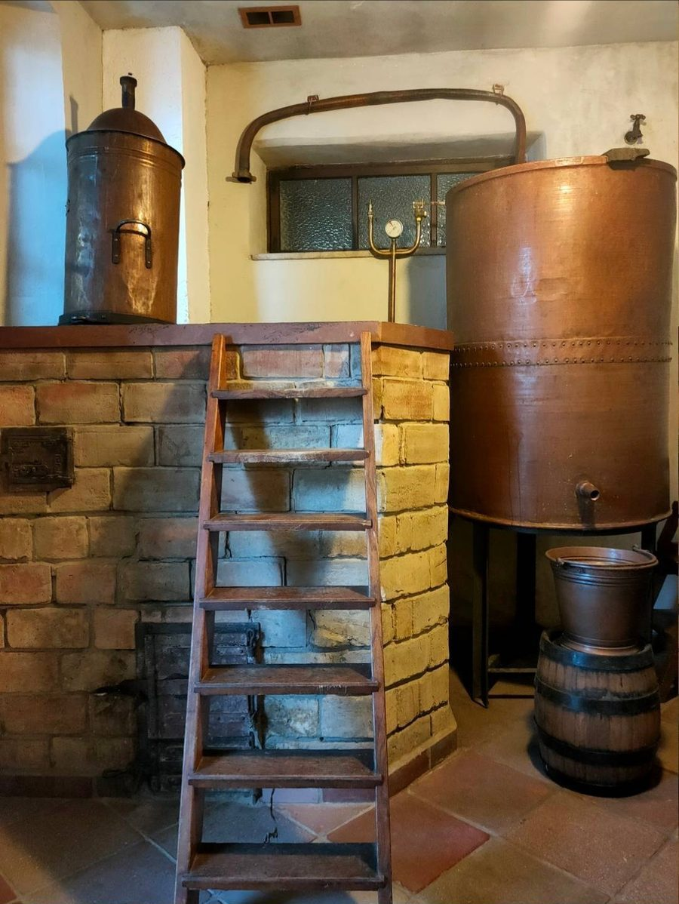
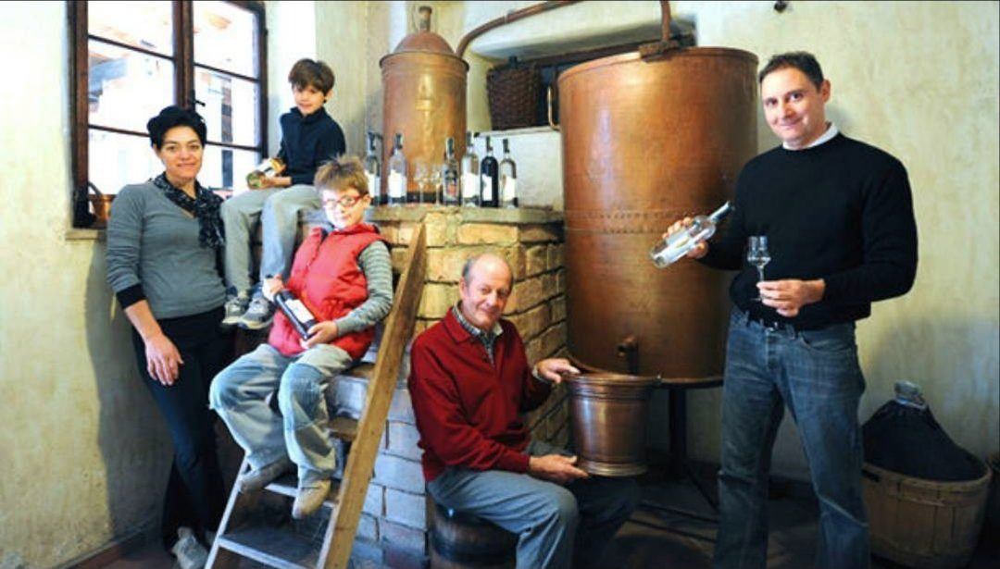
-
Le vinacce
Nella caldaia entrano circa 200 kg di vinacce selezionate, scaldate lentamente con legna di pino e di larice.
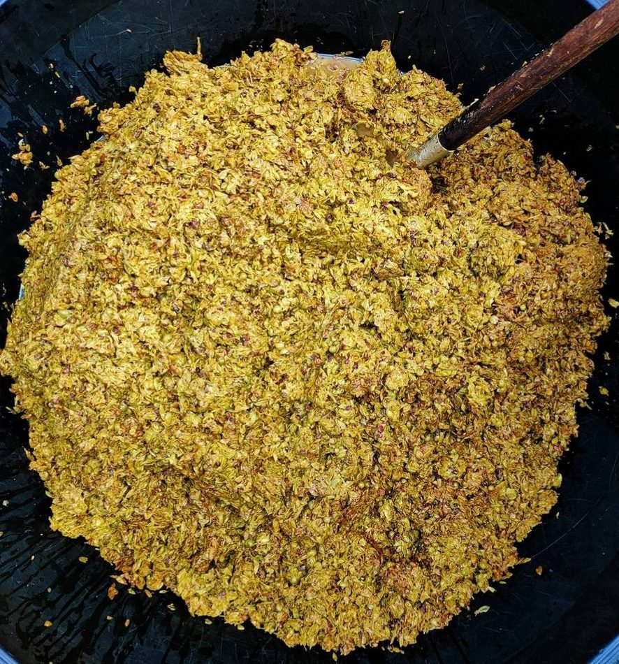
-
Il bagnomaria
Negli anni Settanta Tullio Zadra introduce la distillazione a bagnomaria: tra la fiamma e la caldaia c'è una camicia d'acqua, che scalda in modo dolce e uniforme.
-
Teste, cuore e code
Una cotta dura da una a due ore. Il distillatore separa le teste e le code e tiene solo il cuore: la parte migliore, che diventa grappa.
Schema: teste e code si scartano, il cuore diventa grappa.
-
Nel bicchiere
«La sapienza antica della distillazione si basa sulla lentezza del procedimento.»
Dalle vinacce di Schiava, Nosiola, Cabernet e Moscato nascono grappe monovitigno, plurivitigno e invecchiate.
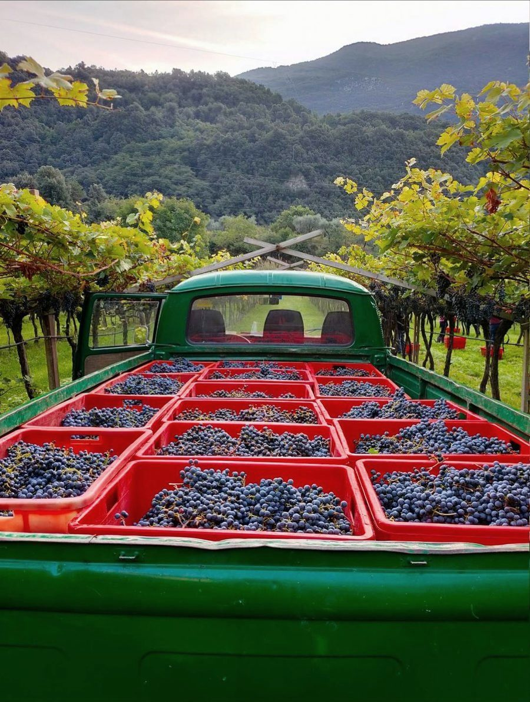
Vendemmia
Uva scelta prima della raccolta.
In vigna si seleziona l'uva prima della vendemmia, diminuendo la quantità ma favorendo la qualità. Dalle uve nasce il vino; le vinacce passano in distilleria.
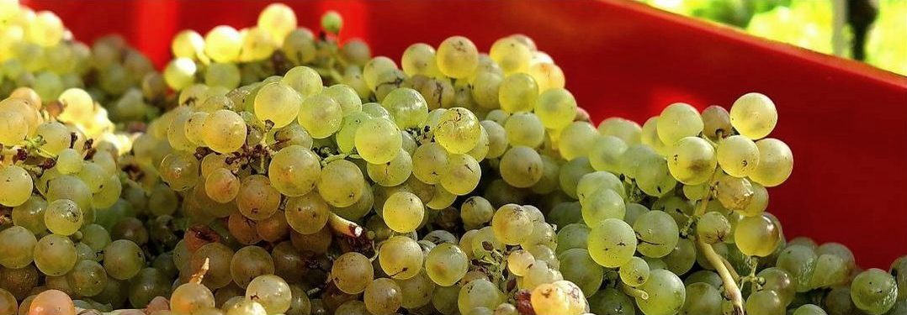
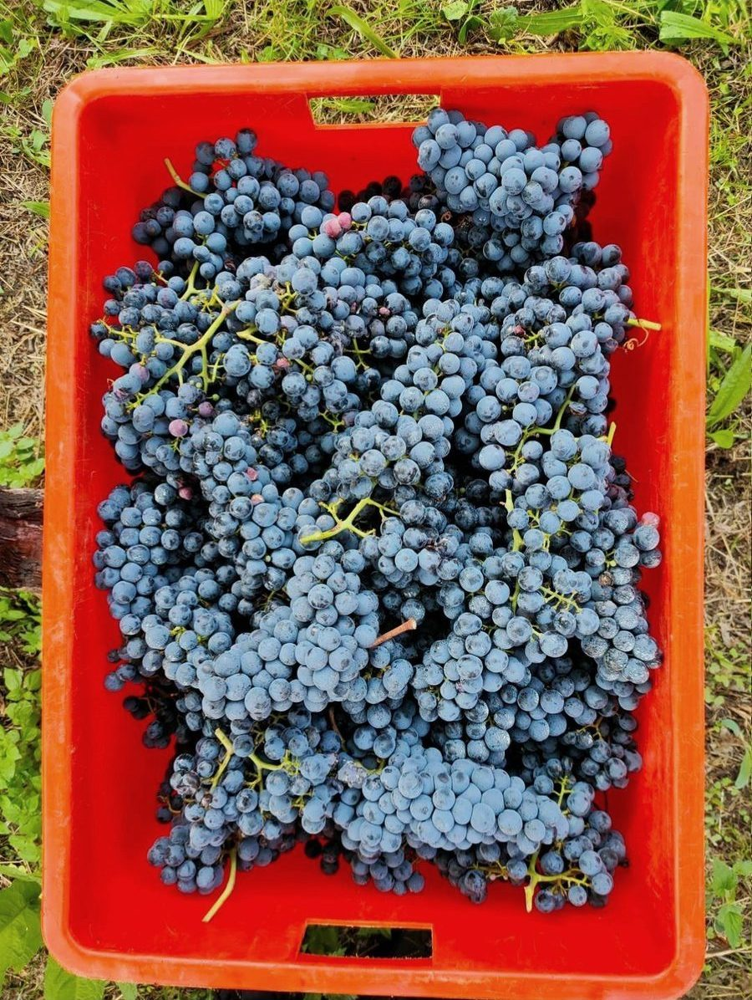
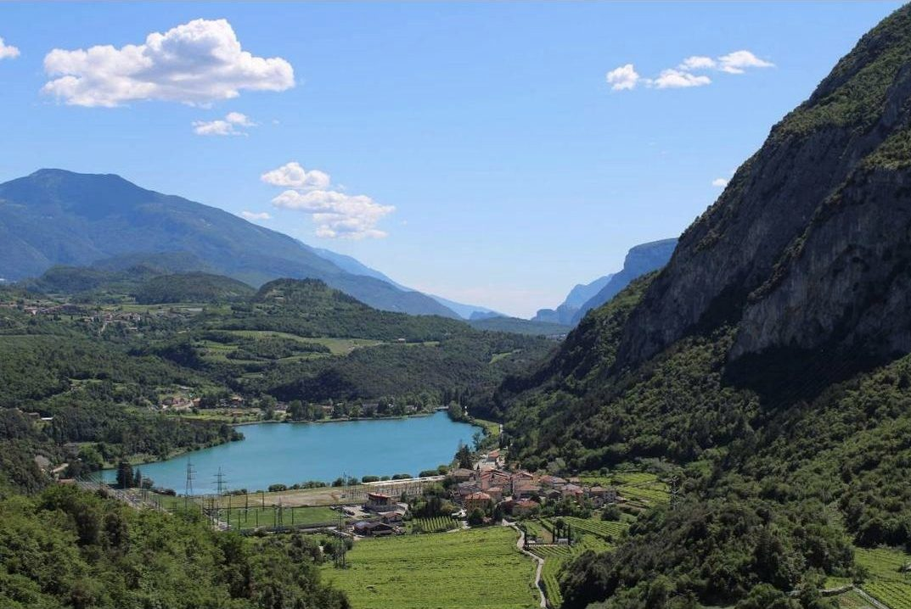
Il territorio
Santa Massenza, tra due laghi.
Le vigneCirca quattro ettari vicino ai due laghi, su terreni calcarei, con forti differenze di temperatura tra il giorno e la notte.
Gli oliviSanta Massenza è il limite più a nord della coltivazione mediterranea dell'olivo: qui cresce la Casaliva, da cui nasce l'olio extravergine.
Il paese delle grappeA inizio Novecento ogni famiglia di Santa Massenza aveva il suo alambicco. Quello di casa funziona ancora.
La storia
Cent'anni di cotte, vendemmie e idee nuove.
Dalla distilleria di inizio secolo al primo vino dolce, all'olio e all'aceto: ogni prodotto ha una data.
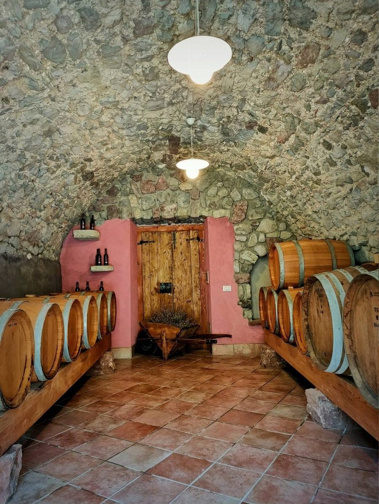
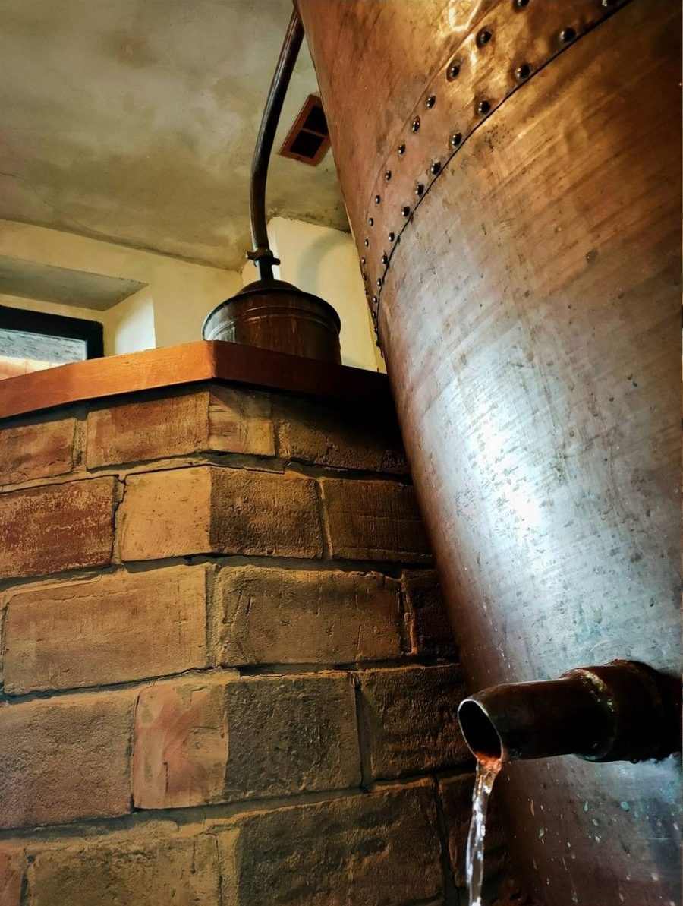
Inizio '900La distilleria in rameA Santa Massenza ogni famiglia aveva il suo alambicco: questo funziona ancora.- Anni '70Il bagnomariaTullio Zadra introduce la distillazione a bagnomaria.
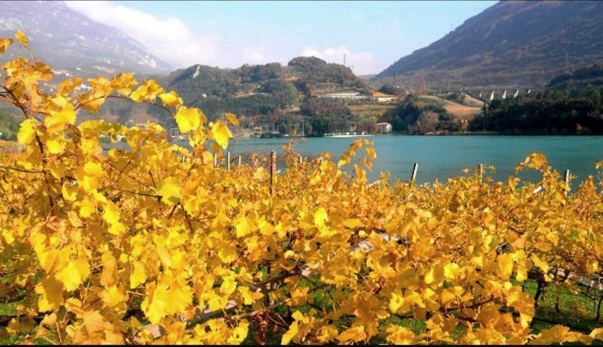
1995L'Agricola SarosTre amici avviano un nuovo progetto sulle vigne e gli olivi della valle.- 1998Nasce il SarosUn vino dolce da uve botritizzate.
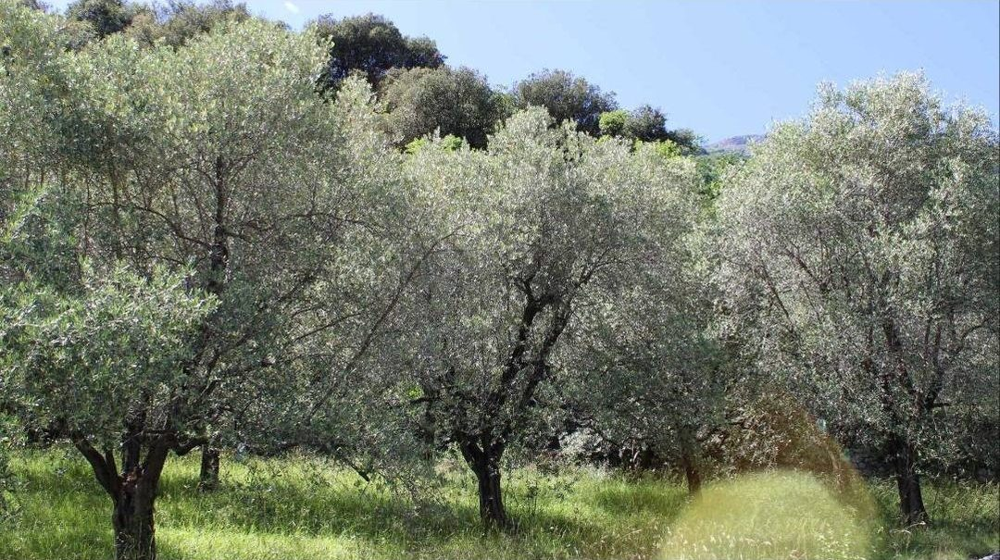
2006L'olio extravergineDagli olivi di Casaliva di Santa Massenza.- 2007L'acetaiaIl balsamico di Santa Massenza, da mosto cotto di Schiava e Cabernet Sauvignon.
- 2023MugoginIl liquore alle gemme di pino mugo e ginepro.
Contatti
Giulio & Mauro, a Santa Massenza.
- Indirizzo
- Piazza di S. Vigilio, 4
38096 Santa Massenza, Vallelaghi (TN) - Telefono
- 0461 864149
- info@giulioemauro.it
- Social
- Instagram · Facebook
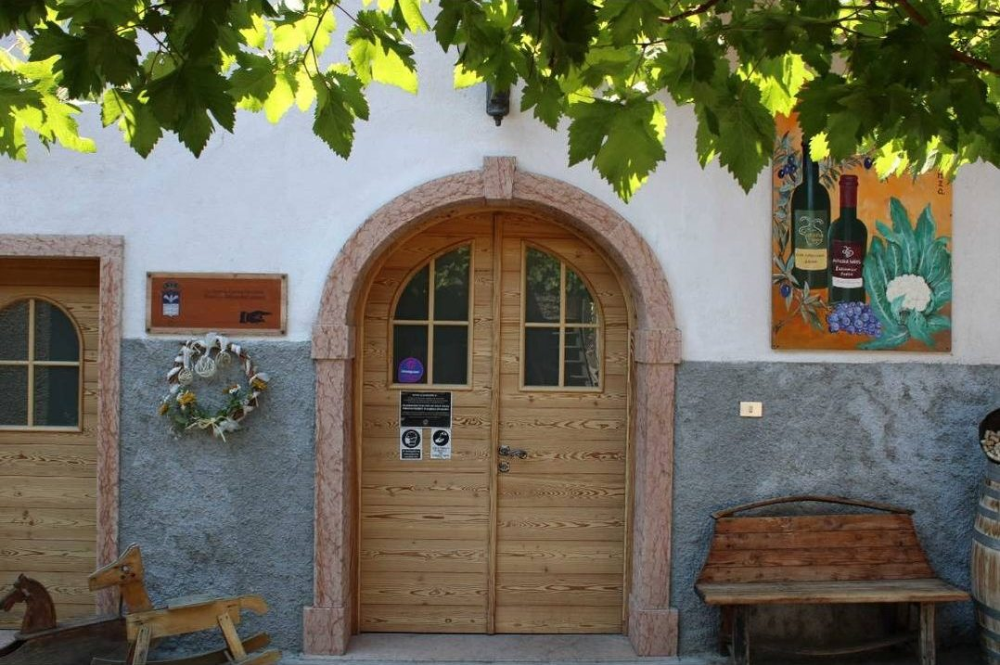